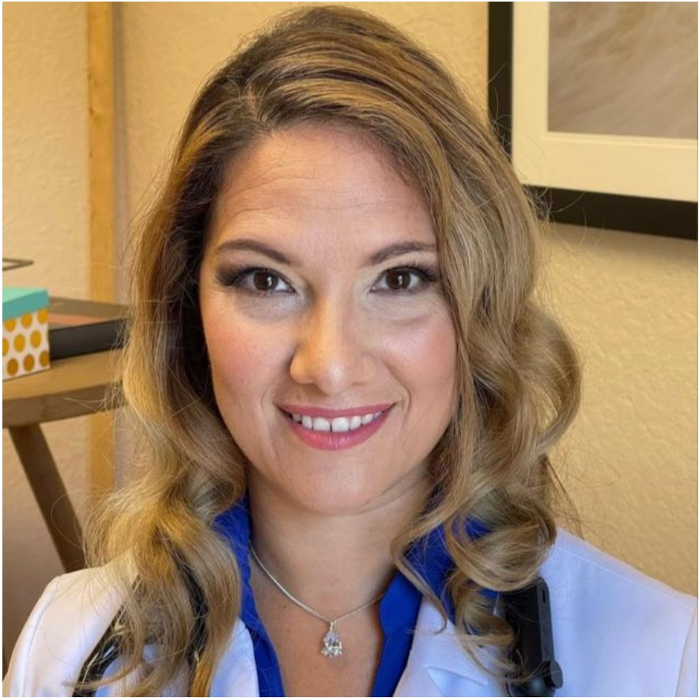

Dr. Sneh Pandey, MD
Medical Director · Internal Medicine PhysicianAccepting patients
Board-certified Internal Medicine · Diplomate, American Board of Obesity Medicine · ADHD-CCSP
Licensed in: California · Texas · Pennsylvania · Florida
View ProfilePhysicians and advanced practice clinicians supporting ADHD care, metabolic health, weight management, primary care, mental health, and telehealth.
Different training backgrounds—one standard: thoughtful evaluation, clear communication, and patient-centered care.

Siya Health uses a physician-led care model. Depending on your state and clinical needs, you may work with a physician, nurse practitioner, or Physician Associate—always with structured evaluation and clear follow-up.
Showing all 7 clinicians
Medical Director · Internal Medicine PhysicianAccepting patients
Board-certified Internal Medicine · Diplomate, American Board of Obesity Medicine · ADHD-CCSP
Licensed in: California · Texas · Pennsylvania · Florida
View Profile
Family Medicine PhysicianAccepting patients
Family Medicine
Licensed in: Florida
View Profile
Family Medicine PhysicianAccepting patients
ADHD-CCSP
Licensed in: Texas · Florida · Pennsylvania
View Profile
Internal Medicine PhysicianAccepting patients
ADHD-CCSP
Licensed in: Pennsylvania
View ProfileFamily Nurse PractitionerAccepting patients
FNP-C
Licensed in: Pennsylvania
View ProfileFamily Nurse PractitionerAccepting patients
FNP-BC
Licensed in: Texas · Ohio
View Profile
Physician Associate · Adult telehealth generalistAccepting patients
PA-C · Adult ADHD, women's health, weight loss & telehealth
Licensed in: California · Texas · Pennsylvania · Florida
View Profile